vignettes/stat1004-ch2b-graphs-vignette.Rmd
stat1004-ch2b-graphs-vignette.RmdThe main purpose of this vignette is to provide R code to produce graphs that feature in Sections 2.4 and 2.5 of the STAT0002 notes. All these graphs involve one variable only. See also the Chapter 2: Graphs (more than one variable).
The R code used in this vignette are available: graphs-vignette.R.
These data are available in the data frame ox_births.
> library(stat1004)
> birth_times <- ox_births[, "time"]
> sort(birth_times)
[1] 1.50 2.00 2.10 2.50 2.50 2.60 2.70 2.75 3.40 3.40 3.40
[12] 3.60 3.60 4.00 4.00 4.00 4.10 4.20 4.20 4.25 4.30 4.70
[23] 4.70 4.90 5.00 5.25 5.50 5.60 5.70 5.90 6.10 6.25 6.25
[34] 6.40 6.40 6.50 6.50 6.80 6.90 7.00 7.00 7.20 7.25 7.25
[45] 7.30 7.30 7.30 7.50 7.50 7.50 7.50 7.80 8.10 8.20 8.25
[56] 8.30 8.30 8.45 8.50 8.50 8.50 8.50 8.75 8.90 9.00 9.20
[67] 9.25 9.25 9.50 9.50 9.75 9.75 10.00 10.10 10.20 10.25 10.40
[78] 10.40 10.40 10.70 10.70 10.75 11.00 11.20 11.50 12.75 12.90 14.25
[89] 14.30 14.50 14.60 15.00 16.00 16.50 19.00ecdf does? Use ?ecdf to check our answer.> ox_ecdf <- ecdf(birth_times)
> ox_ecdf(1)
[1] 0
> ox_ecdf(2)
[1] 0.02105263
> 2/95
[1] 0.02105263
> ox_ecdf(4.7)
[1] 0.2421053
> 23/95
[1] 0.2421053
> ox_ecdf(19)
[1] 1
> ox_ecdf(100)
[1] 1The plot method for an object returned by ecdf produces a plot much like (the hollow circles in) Figure 2.3 in the STAT0002 notes.
We will label a lot of axes with “time (hours)”. To make our lives a little easier we create a character variable called xlab.
> xlab <- "time (hours)"> plot(ox_ecdf, main = "", xlab = xlab, ylab = "cumulative relative frequency", pch = 1)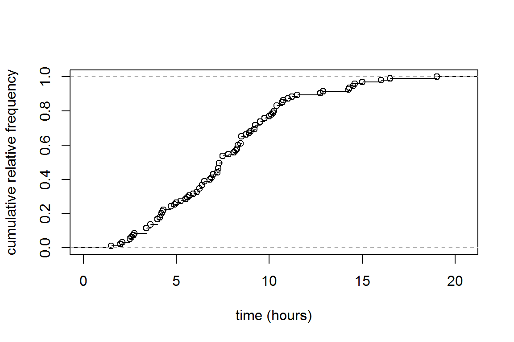
For an explanation of how to construct a histogram, and why it is constructed in this way, see the short How to draw a histogram video. The following code produces the plots on the right side of Figure 2.4 in the notes. Note that in the first plot the probability = TRUE (or prob = TRUE for short) argument is important: it ensures that the total area of the rectangles of the histogram is equal to 1. In the second plot it isn’t necessary to include prob = TRUE because if the bin widths are unequal then (sensibly) hist uses prob = TRUE.
> hist(birth_times, prob = TRUE, col = 8, main = "", xlab = xlab)
> br <- c(seq(from = 0, to = 12, by = 2), 20)
> hist(birth_times, breaks = br, col = 8, main = "", xlab = xlab)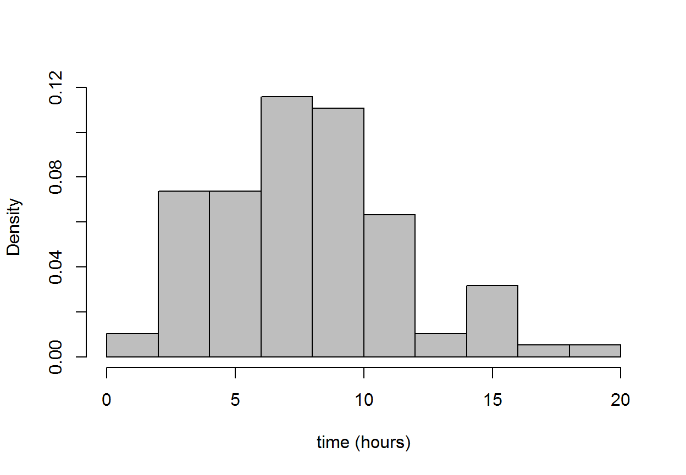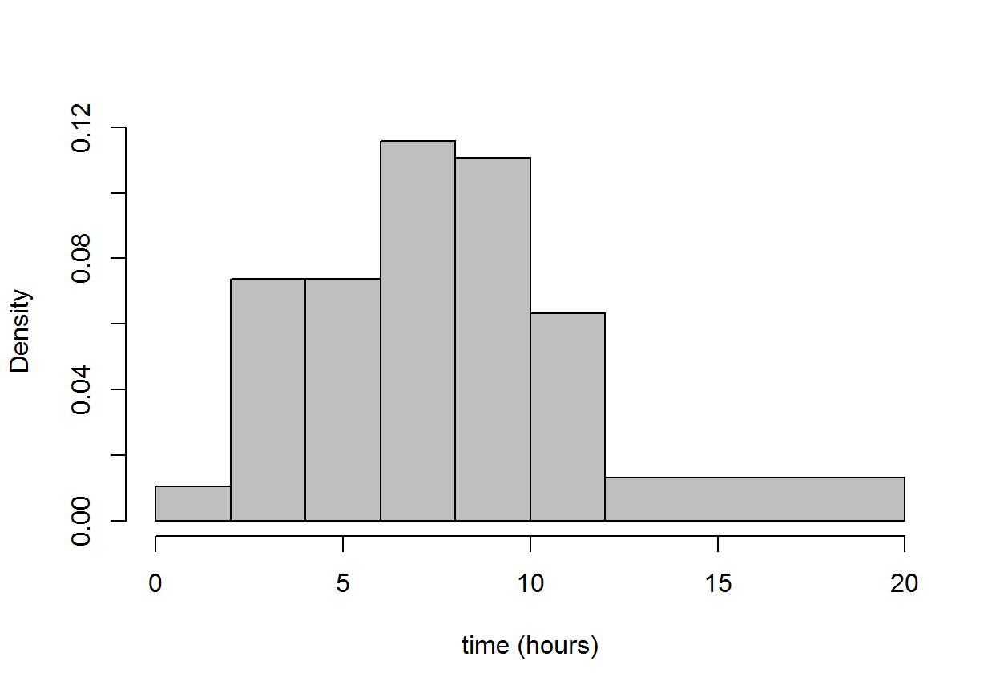
breaks does? … and the function and seq?The hist function returns an object (a list of several objects in fact) containing the information used to construct the plot. If we assign this to an R object, ox_tab say, then we can look at this information and perhaps use it. The ls function tells us the names of the objects in this list. Use ?hist to find out what these objects are.
> ox_tab <- hist(birth_times, plot = FALSE)
> ls(ox_tab)
[1] "breaks" "counts" "density" "equidist" "mids" "xname" We use the information in ox_tab to reproduce the plot in Figure 2.2 of the notes.
> cum_rel_freq <- cumsum(c(0, ox_tab$counts)) / length(birth_times)
> plot(ox_tab$breaks, cum_rel_freq, type = "b", pch = 16, ylab = "cumulative relative frequency", xlab = xlab)
> abline(h = 1, lty = 2)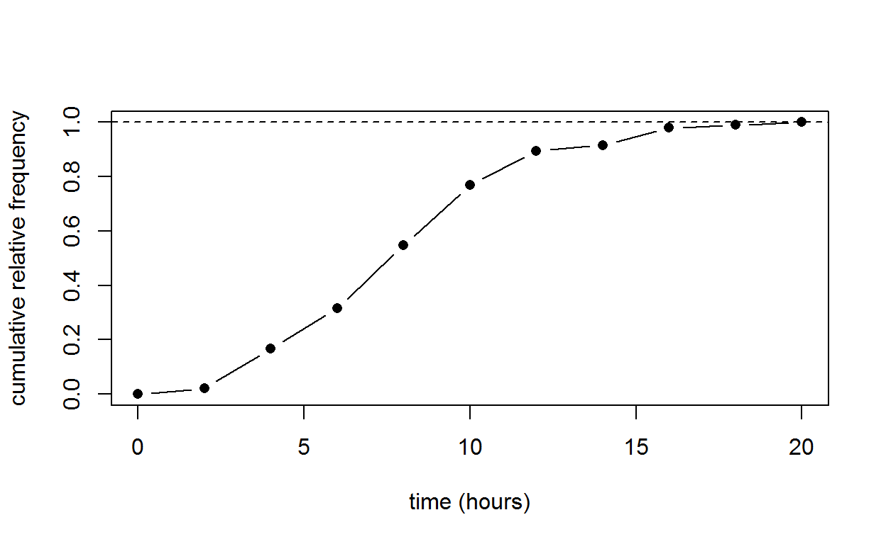
cumsum does?The following code produces the histogram-like alternative plots in the lecture slides STAT0002 lecture slides. As you can see we can do many things to change the appearance of plots. Use ?par to see a list of the graphical parameters that we can use.
> # adjust plot margins, produce a 2 by 2 array of plots (fill row 1 then row 2)
> par(mar = c(4, 4, 1, 1), mfrow = c(2, 2))
> # no vertical axis
> hist(birth_times, col = 8, prob = TRUE, axes = FALSE, xlab = xlab, ylab = "", main = "")
> axis(1, line = 0.5)
> # no vertical axis plus rug of points
> hist(birth_times, col = 8, prob = TRUE, axes = FALSE, xlab = xlab, ylab = "",main = "")
> axis(1, line = 0.5)
> rug(birth_times, line = 0.5, ticksize = 0.05)
> # non-shaded frequency polygon
> n <- length(ox_tab$mids)
> ox_tab$mids <- c(ox_tab$mids[1], ox_tab$mids, ox_tab$mids[n])
> ox_tab$density <- c(0, ox_tab$density, 0)
> plot(ox_tab$mids, ox_tab$density, xlab = xlab, ylab = "density", type = "l", las = 1)
> axis(1, line = 0)
> # shaded frequency polygon with no vertical axis
> plot(ox_tab$mids, ox_tab$density, xlab = xlab, ylab = "", type = "l", bty= "l", axes = FALSE)
> axis(1, line = -0.4)
> polygon(ox_tab$mids, ox_tab$density, col = 8)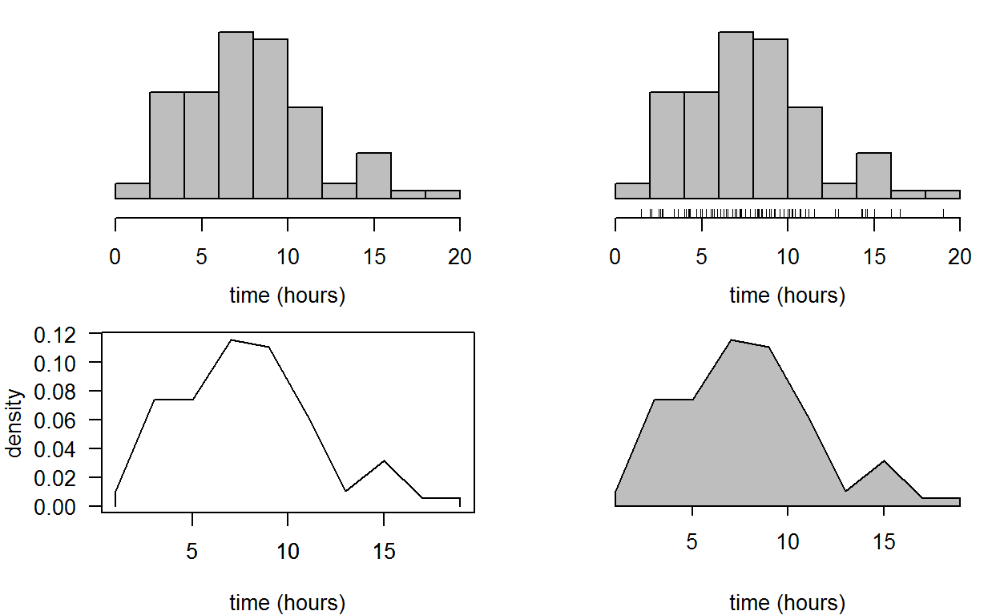
The short How to draw a histogram video also describes how to draw a stem-and-leaf plot.
> # The default plot
> stem(birth_times)
The decimal point is at the |
0 | 5
2 | 015567844466
4 | 00012233779035679
6 | 1334455890023333355558
8 | 12333555558902335588
10 | 0123444778025
12 | 89
14 | 33560
16 | 05
18 | 0
>
> # The plot that appears in the notes
> stem(birth_times, scale = 2)
The decimal point is at the |
1 | 5
2 | 0155678
3 | 44466
4 | 00012233779
5 | 035679
6 | 133445589
7 | 0023333355558
8 | 123335555589
9 | 02335588
10 | 0123444778
11 | 025
12 | 89
13 |
14 | 3356
15 | 0
16 | 05
17 |
18 |
19 | 0?stem to see what scale does.It is surprisingly difficult to produce a nice-looking dotplot using standard R functions. One possibility is to use stripchart. The code below also produces the plots Figure 2.5 in the notes.
> stripchart(birth_times, method = "stack", pch = 16, at = 0, offset = 2/3)
> title(xlab = xlab)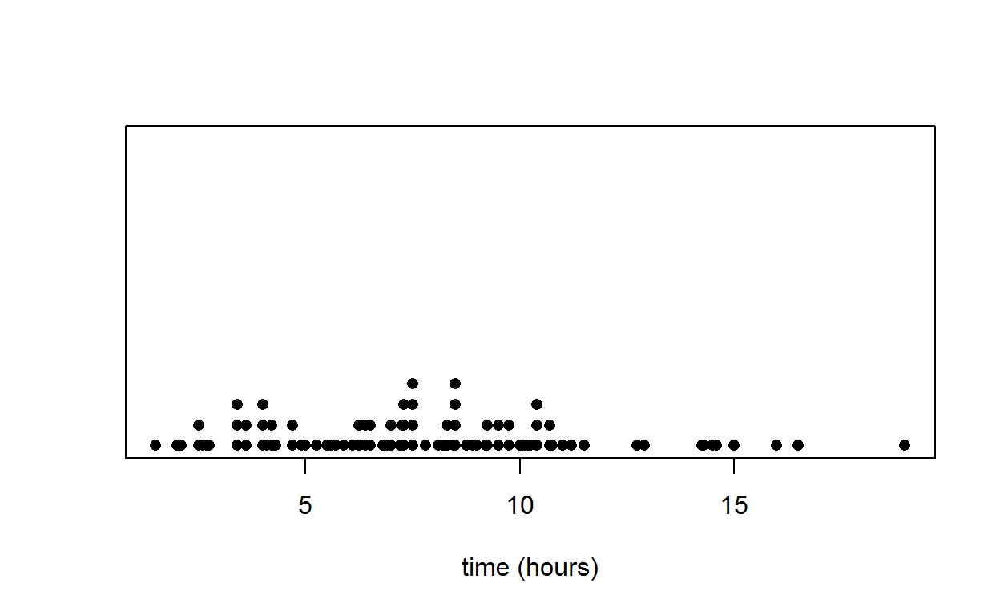
> x <- round(birth_times)
> stripchart(x, method = "stack", pch = 16, at = 0, axes = FALSE, offset = 2/3)
> title(xlab = xlab)
> x_labs <- c(min(x), pretty(x), max(x))
> axis(1, at = x_labs)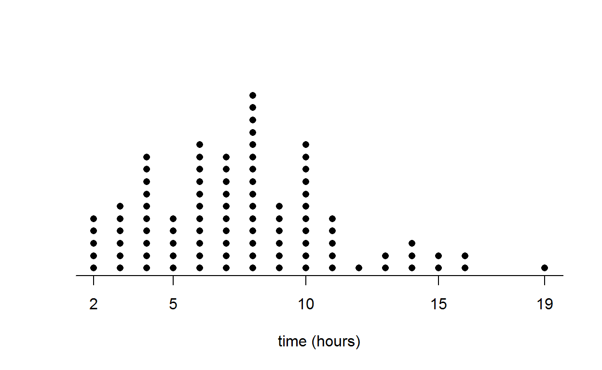
pretty and axis do.The function that produces a boxplot (or box-and-whisker plot) is called boxplot. Inside boxplot the estimation of the quartiles, on which the box part of the plot is based, uses the default value of the argument type (i.e. type = 7) in a call to quantile. In order that we can change the value of type if we wish stat1004 contains a function box_plot, which is a copy of boxplot with the extra argument type added. In box_plot the default is type = 6, which corresponds to the particular way of estimating quartiles that is described in the STAT0002 lecture notes and slides. See the Descriptive Statistics vignette for more information about quantile and the argument type. In many cases we will not need to worry about the choice of the value of type. Unless the dataset is small the value of type will not have enough of an effect on the appearance of the boxplot to matter. This is certainly the case for the birth_times data.
> # type = 6
> b1 <- box_plot(birth_times, horizontal = TRUE, main = "type = 6", xlab = xlab)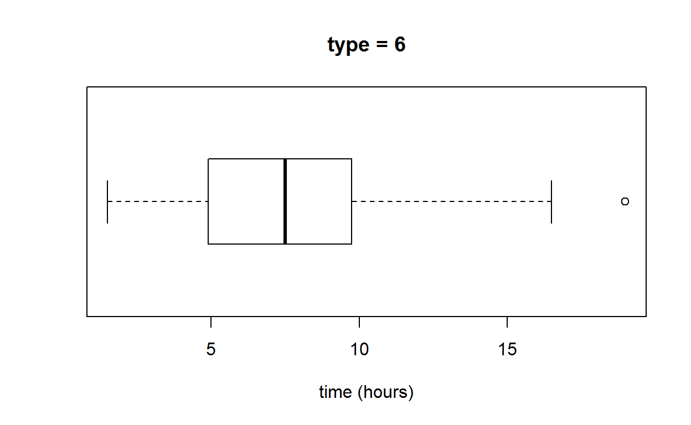
> # type = 7
> b2 <- boxplot(birth_times, horizontal = TRUE, main = "type = 7")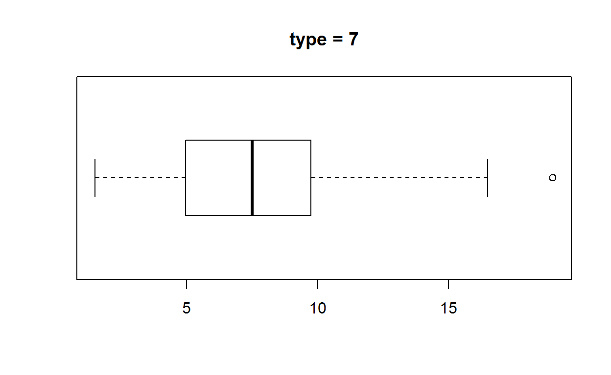
We know from the Descriptive Statistics vignette that only the estimates of the lower quartile differ between the type = 6 and type = 7 cases. We can check this using the objects b1 and b2 returned above.
> as.vector(b1$stats)
[1] 1.50 4.90 7.50 9.75 16.50
> as.vector(b2$stats)
[1] 1.50 4.95 7.50 9.75 16.50boxplot returns in the list component stats? Check your answer using ?boxplot. How could we obtain the values of any data points that lie outside the whiskers?If we read the documentation of boxplot carefully (see ?boxplot and ?bxp) we can have a lot of control over the graph that it produces. The following code produces the plots in Figure 2.7 of the STAT0002 notes.
> par(mar = c(4, 1, 0.5, 1))
> x_labs <- c(min(birth_times), pretty(birth_times), max(birth_times))
> # top left
> box_plot(birth_times, horizontal = TRUE, col = 8, xlab = xlab, pch = 16)
> # top right
> boxplot(birth_times, horizontal = TRUE, col = 8, axes = FALSE, xlab = xlab, pch = 16)
> axis(1, at = x_labs, labels = x_labs)
> # bottom left
> boxplot(birth_times, horizontal = TRUE, axes = FALSE, xlab = xlab, pch = 16, lty = 1, range = 0, staplewex = 0)
> axis(1, at = x_labs, labels = x_labs)
> # bottom right
> boxplot(birth_times, horizontal = TRUE, axes = FALSE, xlab = xlab, pch = 16, lty = 1, range = 0, boxcol = "white", staplewex = 0, medlty = "blank", medpch = 16)
> axis(1, at = x_labs, labels = x_labs)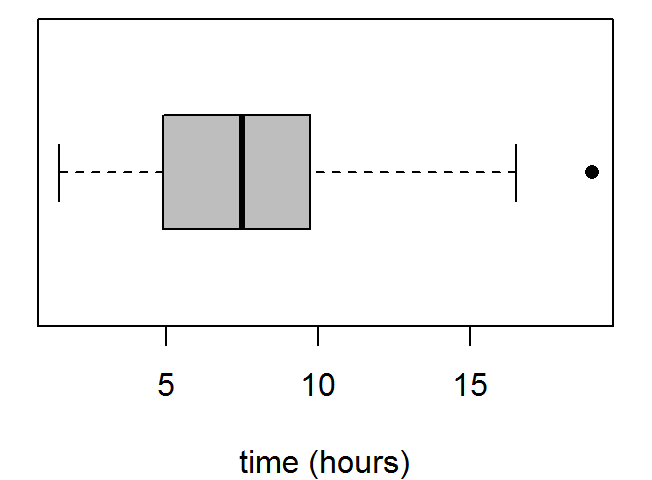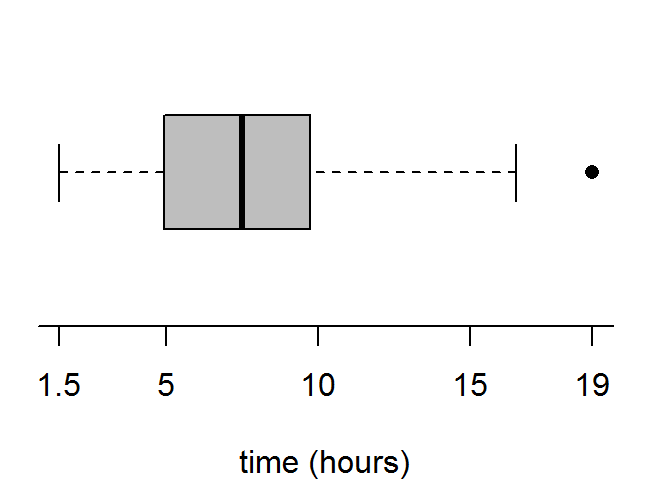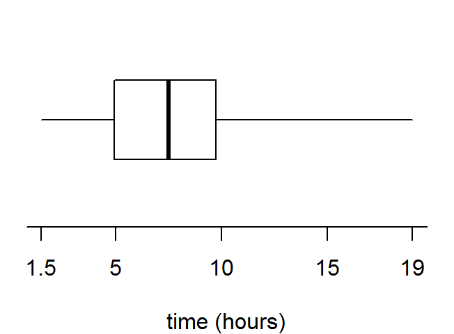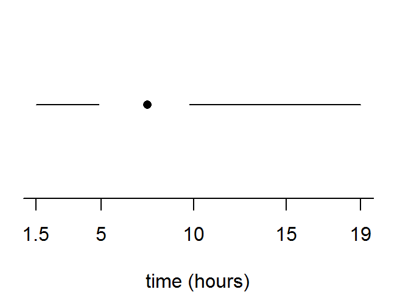
In the Chapter 2: Graphs (more than one variable) vignette we consider both variables in the ox_births data frame, i.e. the numeric continuous variable time and the categorical variable day, producing separate boxplots of time for each day of the week.
We return to the data that feature in the Challenger Space Shuttle disaster vignette. The column in the data frame contains the observed numbers of O-rings that suffer thermal distress. This is a numerical discrete variable. In fact we can be more precise than this, it is an integer variable. One way to summarize these data graphically is using a bar plot. In order to produce the bar plot we first need to tabulate the data, using the functiontable to calculate the frequencies of the numbers of distressed O-rings.
> shuttle$damaged
[1] 0 1 0 0 0 0 0 0 1 1 1 0 0 3 0 0 0 0 0 0 2 0 1
[24] NA
> O_tab <- table(shuttle$damaged)
> O_tab
0 1 2 3
16 5 1 1 This table is OK but it does not include the zero frequencies for the categories 4, 5 and 6.
table not include the categories 4, 5 and 6?table and classes of R objectsAn answer to question 8. is “R can’t possibly know which values the variable shuttle$damaged could have”. It is obvious to us, because we know what these data mean and that a space shuttle has 6 O-rings, but R’s table function cannot infer this from the data alone. In this example it probably doesn’t matter that some of the zero frequencies are missing. However, consider the following example. We simulate 10 values from a Poisson distribution with a mean of 5. For an introduction to simulation see the Stochastic simulation vignette. These data are not real, but imagine that they are the respective numbers of earthquakes that occur in a particular area in the years 2008 to 2017.
We know that these data non-negative integers. R does not know this and has included columns in the table only for non-zero frequencies, i.e. for the values 4, 5, 6, 7, 8 and 10. At the very least we might want the zero frequencies for the values 0, 1, 2, 3 and 9 to be included, and perhaps also something to indicate that there are no values greater than 10. One possibility is the following. It is not particularly elegant but it is quite effective.
?c.If we are really fussy then we could change the name of the final heading in the table.
> tab <- table(c(x, 0:11)) - 1
> names(tab)[12] <- ">10"
> tab
0 1 2 3 4 5 6 7 8 9 10 >10
0 0 0 0 2 3 2 1 1 0 1 0 To explore another option we return to the variable shuttle$damaged. R has a system by which R objects are categorized into different classes. The effect of a given R function may depend on the class of the object provided to that function. The function class can be used to find out what class an object has.
> class(shuttle$damaged)
[1] "integer"R thinks (correctly) that shuttle$damaged is an integer variable. Unfortunately, as far as I am aware, there is no mechanism for us to tell R that this integer variable can take only the values 0, 1, 2, 3, 4, 5, or 6. However, there is a way to do this if we get R to treat shuttle$damaged as a categorical variable. Then we can provide to R information about the possible levels of the categorical variable shuttle$damaged. In R categorical variables are called factors. We use the function factor to create a new variable fac_dam that is (a) a factor, and (b) has levels 0, 1, 2, 3, 4, 5 and 6.
Now when we use table the output reflects automatically the possible values of the variable.
> O_tab_fac <- table(fac_dam)
> O_tab_fac
fac_dam
0 1 2 3 4 5 6
16 5 1 1 0 0 0 The following code reproduces the graphs in Figure 2.8 of the notes.
> par(mfrow=c(2,2))
> par(oma=c(0,0,0,0),mar=c(4,4,1,2)+0.1)
> xlab <- "number of damaged O-rings"
> ylab <- "frequency"
> barplot(O_tab, xlab = xlab, ylab = ylab, las = 1)
> barplot(O_tab, space = 1, xlab = xlab, ylab = ylab, las = 1)
> barplot(O_tab, space = 1, xlab = xlab, ylab = ylab, las = 1)
> abline(h=0)
> yy <- as.numeric(O_tab)
> xx <- as.numeric(unlist(dimnames(O_tab),use.names=F))
> plot(xx, yy, pch = c("0","1","2","3"), axes = FALSE, xlab ="", ylab = ylab, ylim = c(0, 16))
> title(xlab="number of damaged o-rings",line=0.25)
> axis(2, lty = 1, at = yy, labels = yy, pos = -0.3, las = 1)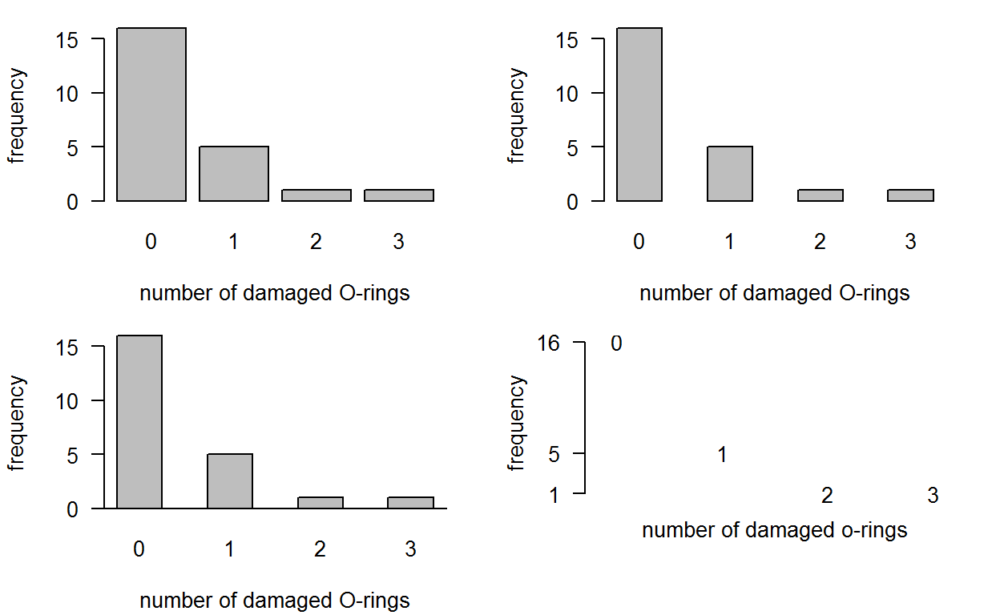
If instead we use the O-tab_fac then the zero frequencies for values 4, 5 and 6 are included in the plot.
> barplot(O_tab_fac, xlab = xlab, ylab = ylab, las = 1)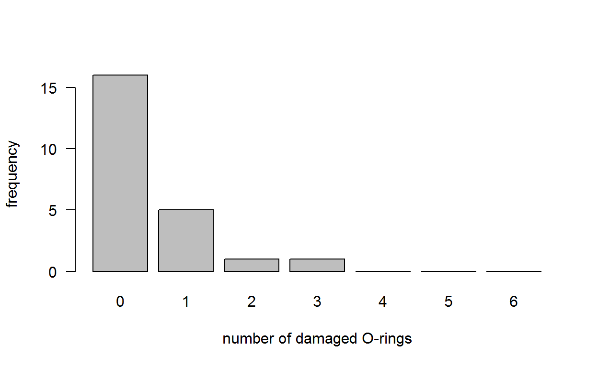
The data in Table 2.8 of the notes are available in the data frame blood_types.
This code produces the bar plot on the left side of Figure 2.9.
> blood_types
ABO Rh percentage
1 O Rh+ 37
2 A Rh+ 35
3 B Rh+ 8
4 AB Rh+ 3
5 O Rh- 7
6 A Rh- 7
7 B Rh- 2
8 AB Rh- 1
> lab <- paste(blood_types$ABO, substr(blood_types$Rh, 3, 3), sep = "")
> barplot(blood_types$percentage, space = 1, xlab = "blood group", ylab = "percentage", las = 1, names.arg = lab)
> abline(h=0)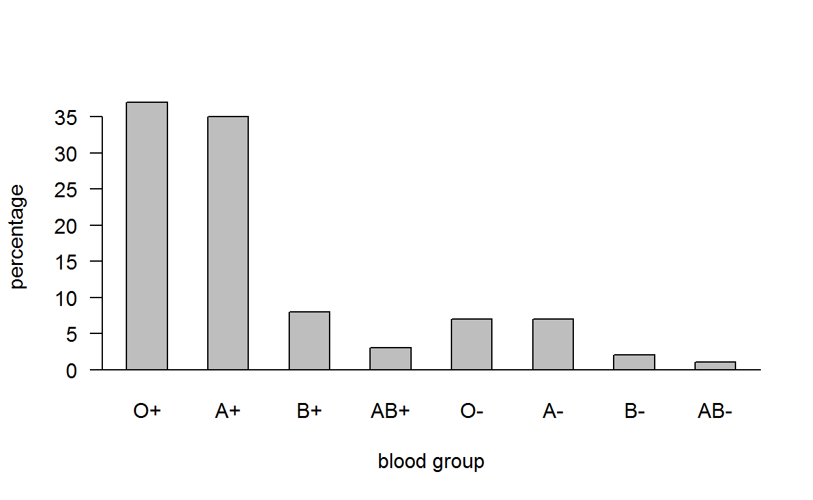
If you have a desperate need to produce a pie chart then you can do this using the following code.
> par(mar = c(1, 1, 0, 1))
> slices <- rep(c("white","grey66","grey33","black"), 2)
> pie(blood_types$percentage, labels = lab, col = slices)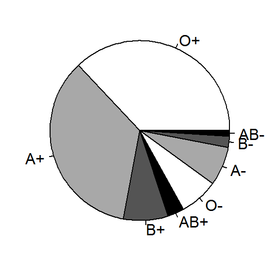
Then read the text in the Note section at ?pie and forget that the function pie exists.
The FTSE 100 share index data described in Section 2.5.6 of the notes are available in the data frame ftse.
> head(ftse)
date price
1220 1984-04-02 1096.3
1219 1984-04-09 1129.1
1218 1984-04-16 1116.2
1217 1984-04-23 1130.9
1216 1984-04-30 1134.7
1215 1984-05-08 1076.1
> tail(ftse)
date price
6 2007-07-09 6716.7
5 2007-07-16 6585.2
4 2007-07-23 6215.2
3 2007-07-30 6224.3
2 2007-08-06 6038.3
1 2007-08-13 6143.5Handling dates in R can be tricky. The main issue is to ensure that a time series, and its dates, are stored correctly. One way to achieve this is to use the function ts to create a time series object, specifying the frequency of the data (frequency = 52 means weekly because there are, approximately, 52 weeks in a year) and the start data (the 14th week of 1984). This time series object is a the vector of weekly closing prices and two attributes in which the important extra information (metadata) of tsp and class is stored. The attribute tsp contains the start date, end date and frequency of the observations and the attribute class indicates that this is a ts (time series) object.
> ftse_ts <- ts(ftse$price, frequency = 52, start = c(1984, 14))
> head(ftse_ts)
[1] 1096.3 1129.1 1116.2 1130.9 1134.7 1076.1
> attributes(ftse_ts)
$tsp
[1] 1984.250 2007.692 52.000
$class
[1] "ts"The following code produces the time series plot on the left side of Figure 2.10. Here we have used the function as.Date to ensure that R knows that the data to be plotted on the horizontal axis of the plot are dates. In a moment we will make use of the time series object ftse_ts.
> plot(as.Date(ftse$date), ftse$price, type = "l", ylab = "weekly FTSE 100 share index", xlab = "year")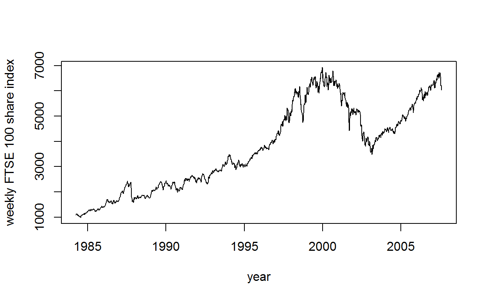
The following code produces the plot on the right side of Figure 2.10. The class of ftse_ts is "ts" so R knows that when we use plot(ftse_ts) we want a time series plot. The rest of the code just adjusts the appearance of the plot.
> plot(ftse_ts, ylab = "FTSE 100 (in 1000s)", xlab = "year", las = 1, axes = FALSE)
> q2 <- c(min(ftse_ts), (2:6) * 1000, max(ftse_ts))
> axis(2, at = q2, labels = round(q2 / 1000, 1), las = 1)
> axis(4, at= q2, labels = round(q2 / 1000, 1), las=1)
> axis(1)
> abline(h = par("usr")[3])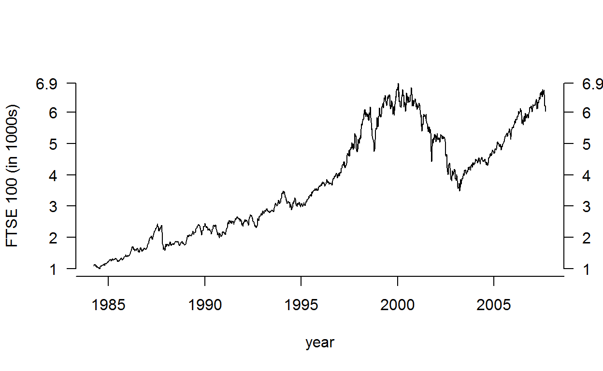
The mystery data plotted in Figure 2.11 of the notes are the numbers of people in the UK visiting their doctor with symptoms of influenza (’flu) during four-weekly time periods over the time period 28th January 1967 to 13th November 2004. [I hope that this doesn’t spoil the surprise for you.]
> head(flu)
date visits
1 1967-01-28 91.5
2 1967-02-25 86.8
3 1967-03-25 62.1
4 1967-04-22 63.0
5 1967-05-20 57.7
6 1967-06-17 53.7
> tail(flu)
date visits
489 2004-06-26 4.35
490 2004-07-24 2.76
491 2004-08-21 6.36
492 2004-09-18 9.71
493 2004-10-16 12.28
494 2004-11-13 18.99We create a time series object using ts and produce the plot in Figure 2.11
> par(mar = c(5, 5, 4, 3) + 0.1, cex.axis = 0.8, cex.lab = 0.75)
> flu_ts <- ts(flu[,2], frequency = 13, start = c(1967, 4))
> plot(flu_ts, ylab="number of 'flu consultations (in 1000s)", xlab = "year", las = 1, axes=FALSE)
> q2 <- c(min(flu_ts),(1:6) * 100, max(flu_ts))
> axis(2, at = q2, labels = round(q2, 1), las = 1)
> axis(4, at = q2, labels = round(q2, 1), las = 1)
> abline(h=0)
> axis(1,pos=-1)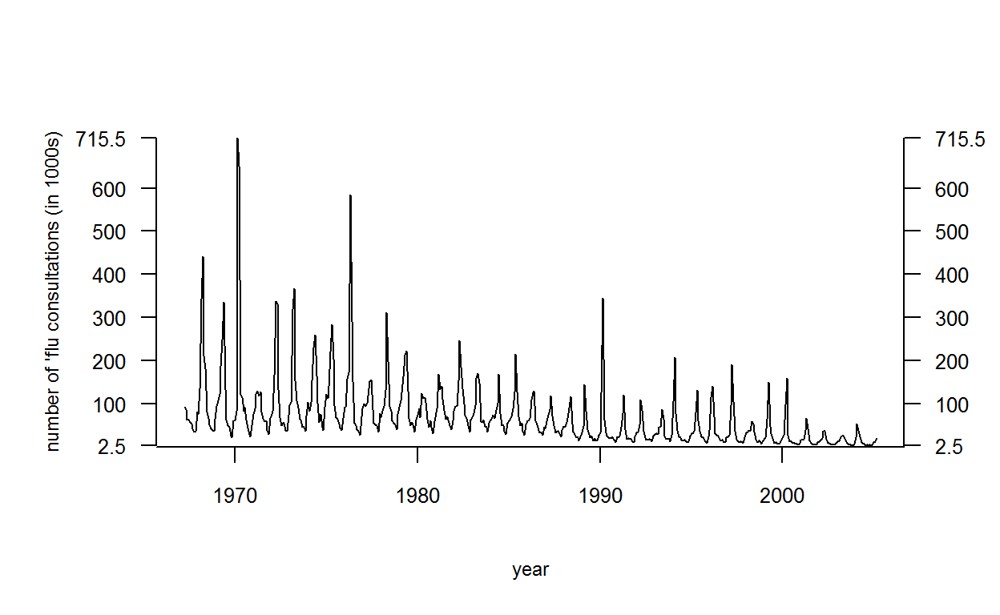